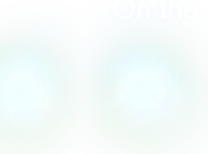
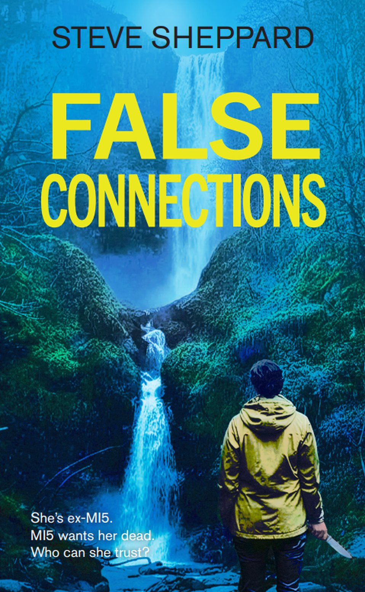
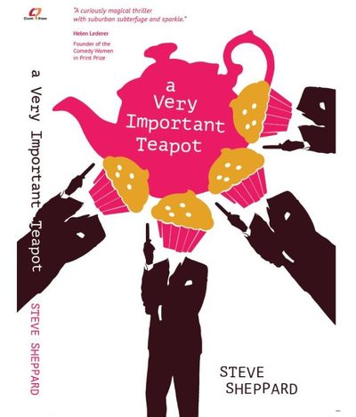
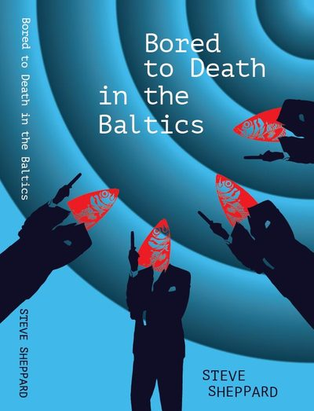
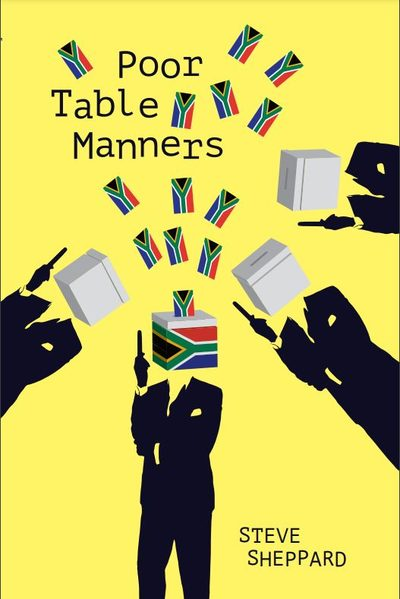
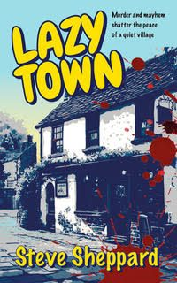

False Connections, by Steve Sheppard
Three years ago, Mel Milano was an MI5 intelligence officer with a promising career. Then, during a routine operation in Wales, things went drastically wrong.
She's ex-MI5. MI5 wants her dead. Who can she trust?
Mel Milano is on the run
Drummed out of the service on trumped-up charges by MI5 Deputy Director Sarah Brook, Mel lost her career, her self-respect, her confidence and her fiancé, Liam Webster. Nothing made sense.
Three years on, she is rebuilding her life, working for a private security outfit. But it's clear that Mel's not the only one still holding a grudge. Suddenly everybody seems to want her dead. But why?
A straight thriller, set in Hampshire, Wales and beyond, with lots of action and twists. Mel is not short of a witty line or an acerbic comment.
- Out June 2026
- 279 pages
- Introducing Mel Milano
"Addictively readable."
Justine Gilbert, author, Crime Writers' Association

Dawson and Lucy: spies and laughs
The initially rather hapless but always witty and optimistic Dawson, and the considerably less hapless and increasingly kick-ass Lucy. Three standalone spy thrillers with (lots of) laughs, published by the lovely little indie publisher Claret Press. A fourth, set in Naples, is on the cards.

Northern Victoria, Australia
A Very Important Teapot
The hunt for a lost cache of Nazi diamonds, with half the local underworld, the police and three countries' intelligence agencies trying to catch up with Dawson.
2019

Estonia
Bored to Death in the Baltics
A bomb, a kidnapping, a traitor inside MI6, and the tantalising Sesks twins. I defy you to find another thriller, comedy or otherwise, written in English and set in Estonia.
2021

Cape Town
Poor Table Manners
A missing government lawyer, a kidnapped agent, a gunpoint stand-off on Table Mountain, and a helicopter that may scoop up some goats.
2024
"A curiously magical thriller with suburban subterfuge and sparkle."Helen Lederer, founder of the Comedy Women in Print Prize
"A thriller, a chase, a buddy story and a mystery, all smoothly told with hugely engaging characters."Adrian Magson, author of Hostile State
"What a hilarious, energetic and entertaining roller-coaster of a read this is."Sue Clark, author of Note to Boy
Murder and mayhem in Lazytown
Life in the quirky Oxfordshire village of Idleborough, known to all as Lazytown, is relaxed for jobbing writer Sam Bryant, despite living in the unfortunately named Slaughterhouse Cottages. Then one of the four pubs shuts, the landlord and his wife disappear, and a prominent local turns up murdered.
A standalone comedy murder mystery, inspired by the village I spent twenty-five years living in, and trying to understand.

Oxford Indie Book Fair, Sunday 22 November 2026
S64
Mel, Dawson, Lucy and Lazytown, all on one table. Come and say hello.
Hello, I'm Steve
I was born in Guildford and lived in various parts of Surrey, then Buckinghamshire and Oxfordshire, discovering along the way that these are all quite expensive places to live. I now live in Hampshire.
I spent forty years starting to write books but not finishing them, until I belatedly realised that the key is not to give up. Much to my astonishment, I have now written five novels.
Next stop: Naples
A fourth Dawson and Lucy adventure is on the cards, and I very much hope False Connections is not the last we'll see of Mel. Watch this space.